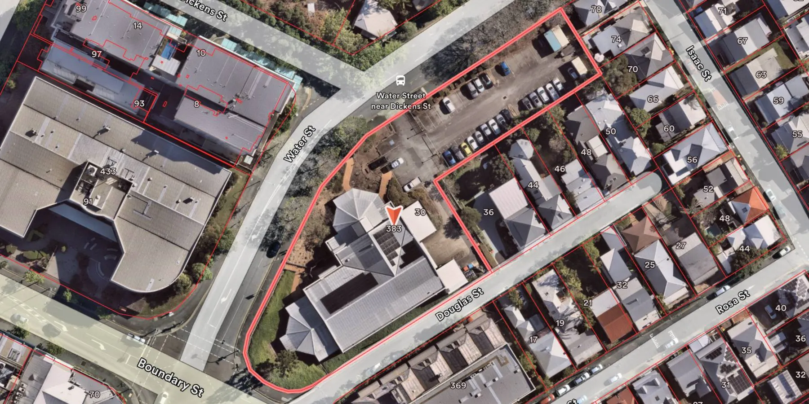
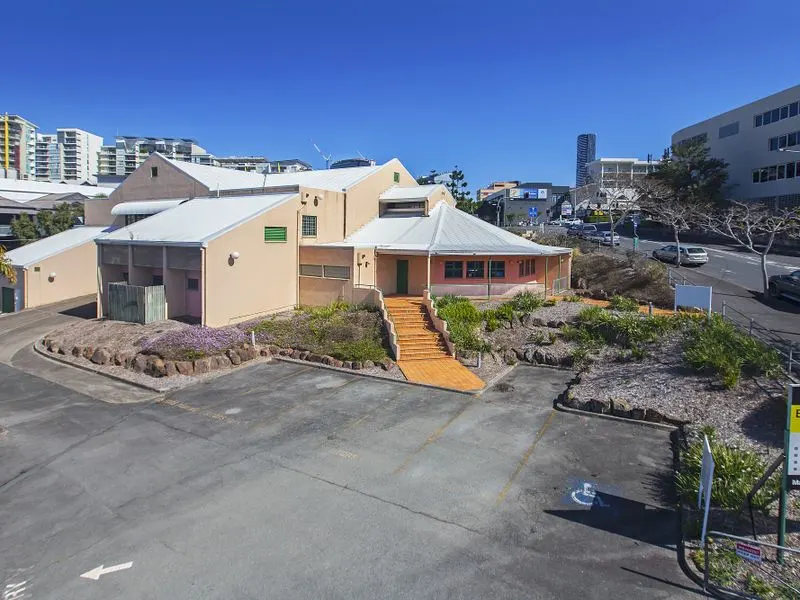
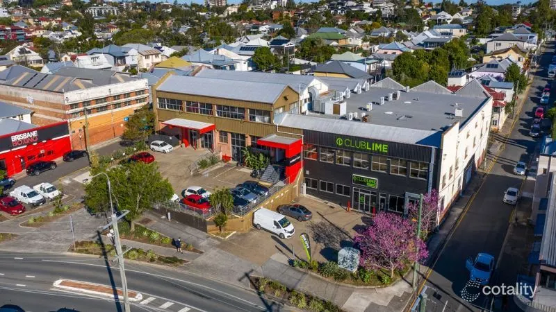
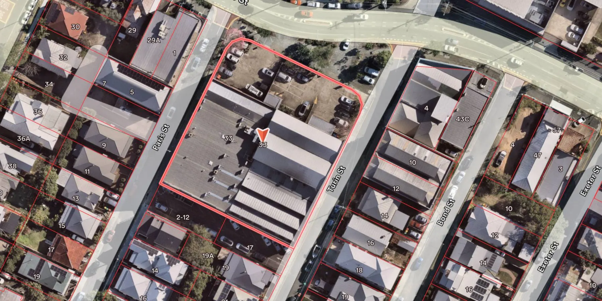
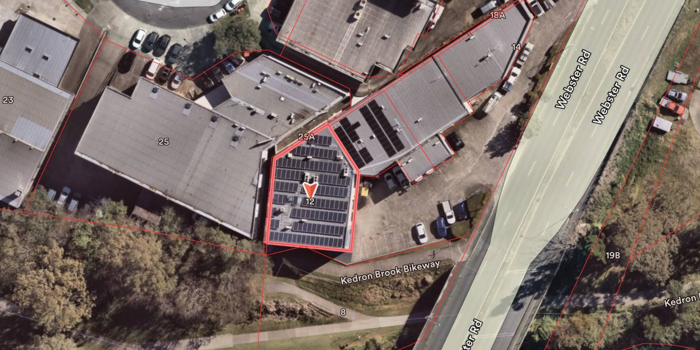
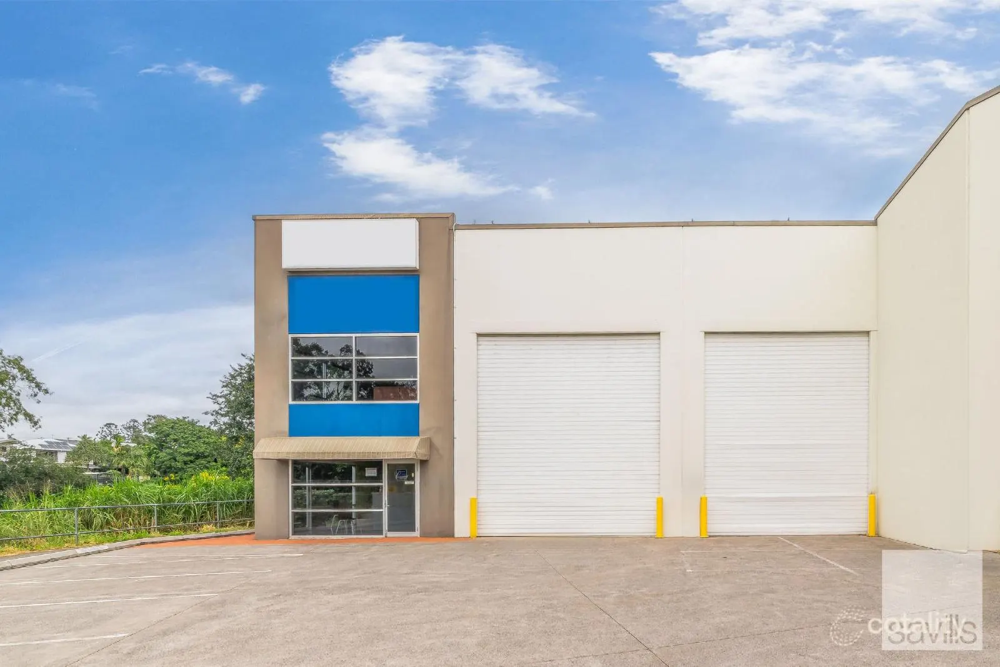

A selection of repositioning, value-add and leasing outcomes delivered acting for the owner — not as an agent. Each was run hands-on across the full lifecycle: strategy, planning, refurbishment, leasing and hold.

Site boundaries

Existing building
Spring Hill · Planning uplift & reposition
$15M+ in value created
3 → 15
Storeys approved
100%
Occupancy achieved
6%
Yield on total cost
Planning uplift & full occupancy on future development site
The situation
A vacant, purpose-built former government building incorrectly zoned and underdeveloped. Its built-to-purpose design made it tough to lease, while a new town planning process stood to unlock the site's full potential.
What we did
Pursued a planning uplift to a 15-storey envelope, ran a full refurbishment, and drove a leasing campaign to reset the tenancy profile and income.
The outcome
The repositioned asset reached full occupancy and returned a 6% yield on total cost — the planning uplift increased the site's value by $15M+.

Existing building - post full refurbishment

Site boundaries
West End · Value-add
$7M in value created
Mixed-use
Asset class
Full cycle
Acquire · refurb · lease
A mixed-use value-add, end to end
The situation
A mixed-use asset trading below its true potential, requiring capital works and active leasing to unlock it.
What we did
Managed the acquisition, scoped and delivered the refurbishment, and led the leasing — owner-side throughout, aligning every decision to the hold thesis.
The outcome
Supported a value increase from $5M to $12M through the works and leasing programme, with income and tenant quality lifted alongside.

Lot boundaries

Strata unit
Stafford · Strata industrial
$1M in value realised
$1.12M
Purchased 2022
$2.15M
Sold 2024
2 yrs
Hold period
Under-rented strata, bought for the expiry
The situation
A strata industrial unit acquired for $1.12M in 2022 with less than two years of lease remaining and rent sitting significantly under market. The short tail that deterred other buyers was the reason to buy.
What we did
Held the asset through to lease expiry rather than locking in the under-market rent, then tested the market as owner-occupier demand for strata industrial strengthened.
The outcome
With the lease expired and significant owner-occupier interest in the strata, the decision was made to sell in 2024 — achieving $2.15M against the $1.12M purchase price.
Refurbishment & rental reversion beside a regional centre
The situation
A retail and office building on High Street, Berserker, sitting directly beside Stockland Rockhampton — among the strongest retail positions in Central Queensland. The location is doing more work than the building, with presentation dated and in-place rents below what the exposure supports.
What we're doing
A full refurbishment has been completed that brought the building's presentation up to the standard of its position, paired with a rental reversion programme that resets rents to market as tenancies come up for renewal.
Where it stands
Under way. The reversion is being captured lease by lease rather than in a single reset, with the refurbishment programme supporting each renewal and new letting as it comes.
Outcomes reflect projects Nick O'Toole led as a client-side asset and development manager, including during 13 years at Nicolas Malouf Investments. Figures are indicative of the projects described and are not a forecast of future results. Represent Commercial — Real Estate Agent Licence 4949809.
YOUR ASSET, RUN THIS WAY.
No obligation. No account managers. Nick responds personally.